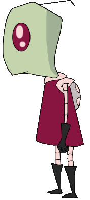
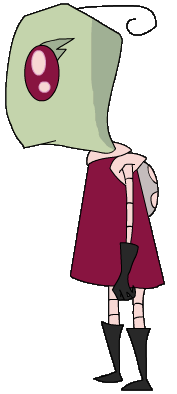

|
  |
The Irken Elite |
|
Irken Military plays an important role in the Irken Empire, since they are so bent on galactic domination. A huge portion of the Irkens are involved in the military. After years under the surface of Irk training for the military, Irkens who want to become a member of specialized elite soldiers must pass a series of tests on the military training planet Devastis. A select few of the elite can go on to become invaders, one of the most respected positions in the Irken Empire. Another division in the Irken Elite is the Planetary Conversion Team, which is simply a unit of the Irken Army that participates in changing a conquered planet into an Irken planet. |